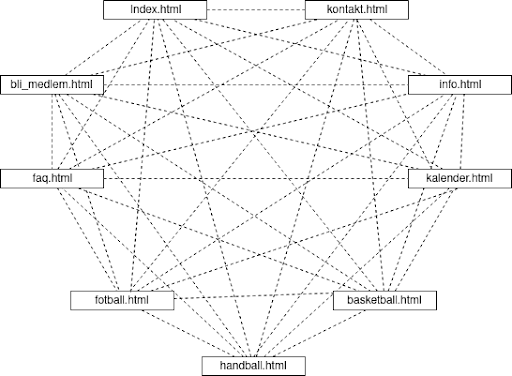
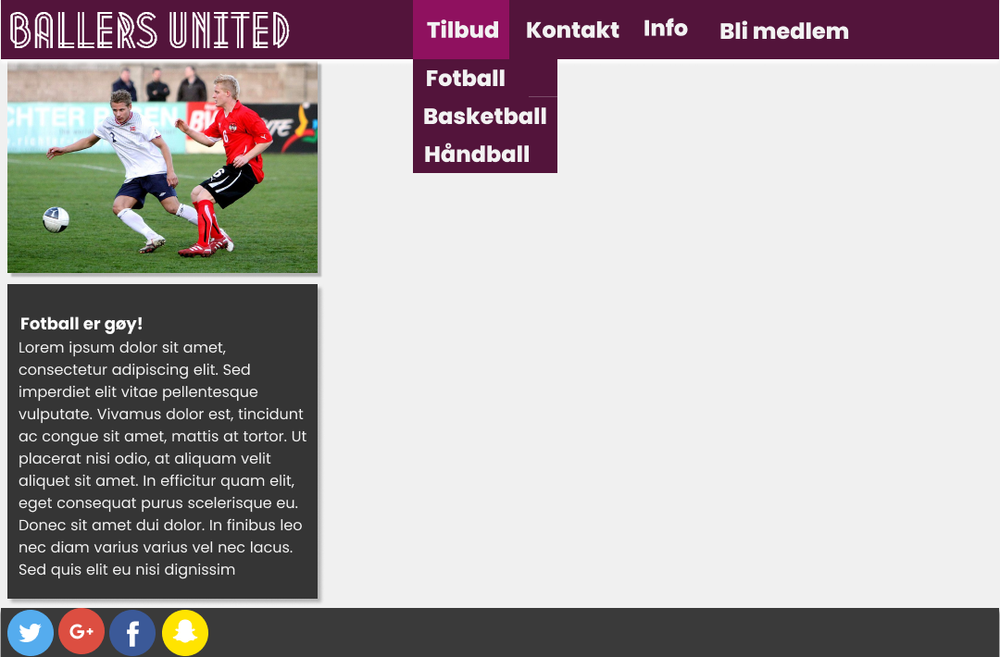
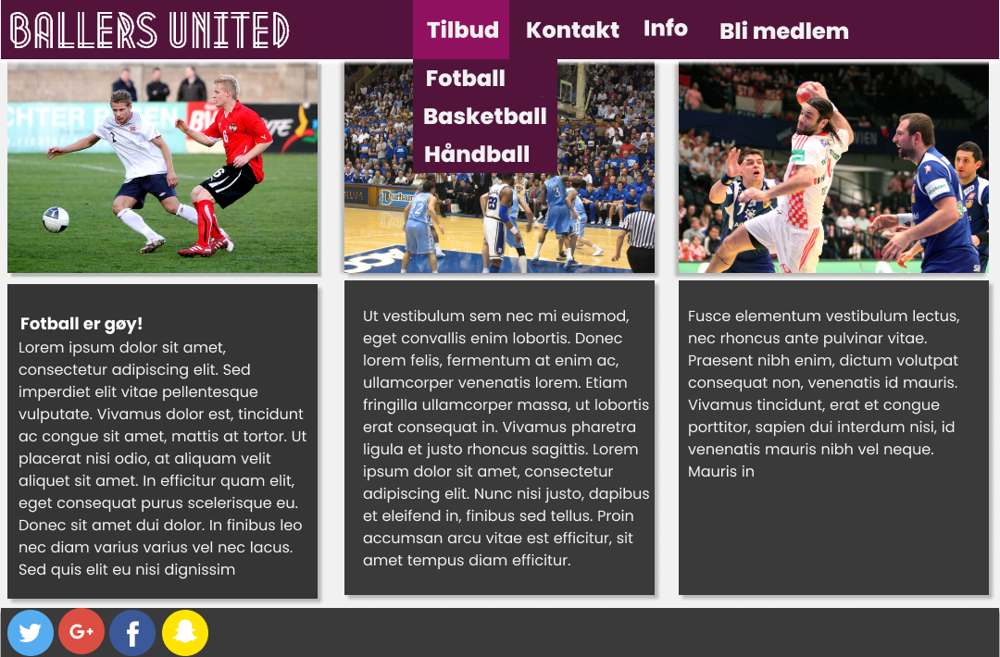
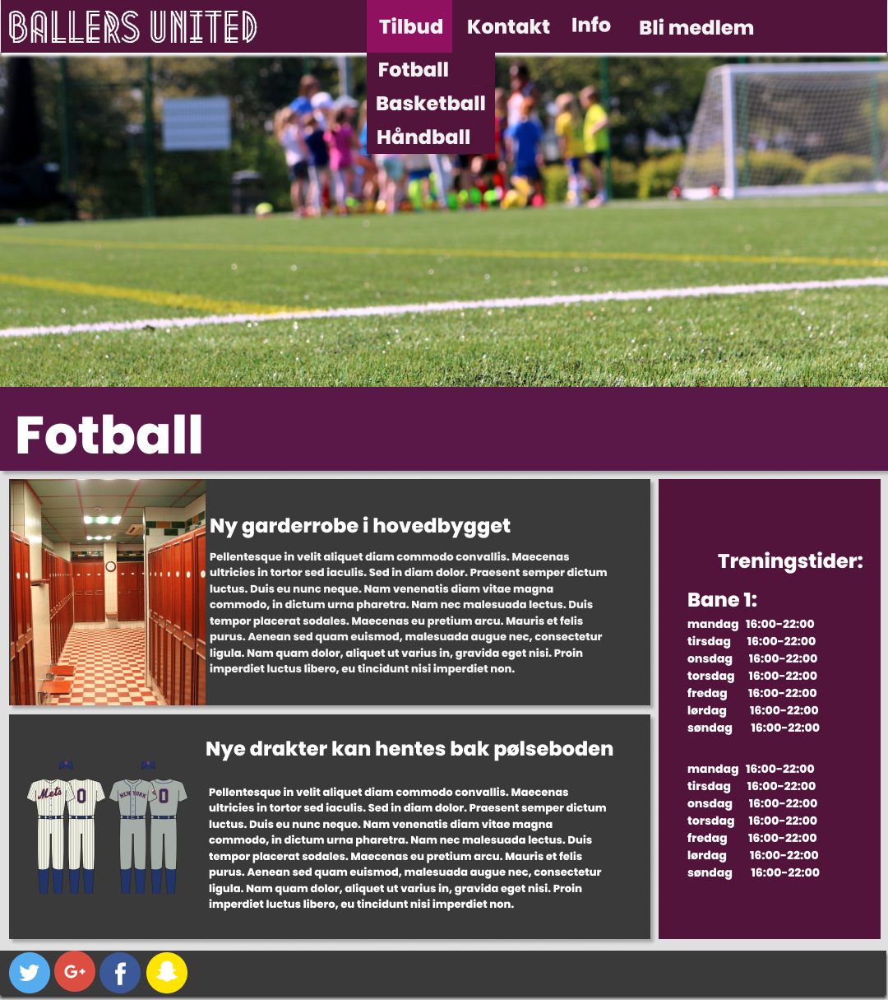

<!DOCTYPE html>
<html>

<head lang="nb">
  <meta charset="utf-8">
  <title>Design</title>
  <link rel="stylesheet" type="text/css" href="../style/style.css">
  <link rel="stylesheet" type="text/css" href="https://fonts.googleapis.com/css?family=Poppins">
</head>


</html>

<body>
  <article>
    <header>
      <h1>Ballers United designsheet</h1>
      <h2>av Tobias, Jin, Emil, Lars og Erik</h2>
      <h3>03.10.2018</h3>
    </header>
    <h2>Administrative detaljer</h2>
    <p>Klienten vår er Ballers United. Det er en fiktiv klient.</p>

    <h2>Hensikt, mål og målgruppe</h2>
    <p>
      Hensikten med siden er å informere om Ballers united. Man skal kunne lese om ulike arangemanger og melde seg inn
      i klubben. Målet med siden er å være en tydelig of interessant informasjonskilde for målgruppen. Målgruppen er
      klubbens medlemmer og potensielle medlemmer, samt fans av klubben.
    </p>

    <h2>Sidens Struktur </h2>
    <p>
      Hovedmenyen skal være implementert på hver side. Fra denne skal man kunne komme til alle sidene med bare ett
      klikk. Grunnen til at vi velger denne fremgangsmåten er for å gjøre det lett for brukerene våre å gå direkte til
      den siden de vil og finne den informasjonen de har lyst på. I tillegg så har vi ingen/få sider som undersider av
      noe annet, så det hadde gitt lite mening å strukturere siden hierarkisk eller lineært.
    </p>
    

    <h2>Utseende/oppsett</h2>
    <ul>
      <li>Bakgrunnsfarge: #F1F1F1</li>
      <li>Backgrunnsfarge for innhold: #353535</li>
      <li>Font-farge: #FFFFFF</li>
      <li>Aksentfarge: #53143B</li>
      <li>Aksentfarge 2: #8F115F</li>
      <li>Font-size på siden: 16px</li>
    </ul>
    <p>
      Menyen skal alltid være på toppen av siden. Footer skal være under alt av innhold. Om det ikke er nok innhold til
      å fylle en side skal den være festet på bunen av siden.
    </p>
    <p>
      Menyen skal ha en hvit tekstlogo i venstre hjørne og ha en bakgrunn med aksentfargen og tekst. Knappene på menyen
      skal bytte farge til aksentfarge 2 på hover. Det samme gjelder dropdownmenyene som (kan) vises når man hovrer
      over et menyvalg. Teksten i menyen skal ha størrelse 1.5 em og weight: 900. Menyen skal også ha en hvit skygge 4
      px nedover. </p>
    <p>
      Font-størrelsen på innhold og brødtekst o.l. skal være 1em. Underoverskrifter skal ha størrelse 1.2em og weight
      700.
    </p>

    <p>
      Footeren skal ha bakgrunnsfargen for innhold og innholde sosiale ikoner på venstre side.
    </p>
    <p>
      Her er et eksempel på det generiske sidedesignet.
    </p>
    
    <p>
      Vi har valgt et ganske simplistisk utseende uten for mange farger. Dette gjør at siden ser ren og stilfull ut, og
      gir et godt førsteinntrykk. Vi valgte dette fordi det setter innhold mer i fokus da dette er viktig for en side
      hvis hovedmål er å informere. Logoen i venstre side gjør at brukerer alltid ser den og blir eksponert for den.
      Menyenvalgene skal endre farge når de blir hoveret over, noe som gir en interaktiv følelse. Lilla er en frage som
      psykologisk sett gir en følelse av stolthet som er veldig viktig for en sportsklubb som Ballers United. Disse
      designvalgene vil forhåpentligvis lokke brukeren til å bruke mer tid på siden.
    </p>

    <h2>Krav</h2>
    <p>
      En javascript-funksjon som lager en "roll-over menu" som vil være implementert på hver side. Vi vil at det skal
      være mulig å komme til hver side uansett hvor man er, men vil ikke at det skal være
      en stor meny med masse links. Derfor skal menyen ha underkategorier som dukker opp når man holder over
      "hovedmenyen". For eksempel skal de forskjellige idrettsidene dukke opp når man holder over "Tilbud" i
      hovedmenyen.
    </p>

    <p>
      En javascript-funksjon som viser mer informasjon når man holder over personer. når man holder over/klikker på
      en person vil det dukke opp ett vindu inne på siden som vil ha ett
      større profilbilde og kontaktinformasjon for den gitte personen.
    </p>

    </ol>

    <h2>Innhold</h2>

    <h3>Forside</h3>
    <p>
      Forsiden skal innehold et kort uttdrag fra noen "featured" artikler fra hver sport i klubben og et bilde fra hver
      sport. Utdragene skal være kort og fange oppmerksomheten til brukeren slik at han/hun har lyst til å klikke seg
      viderer inn på artikkelen.
    </p>

    

    <h3>Tilbudssidene/Idrettsidene</h3>

    <p>Alle sportene inkludert i tilbudsmenyen vil ha sin en egen side</p>

    <ul>
      <li>fotball.html</li>
      <li>håndball.html</li>
      <li>basket.html</li>
    </ul>
    <p>
      Disse vil ha ganske lik utforming da hensikten med siden er den samme bare med forskjellige sporter, samtidig
      som dette bidrar til å opprettholde samme stil på hele siden. Sidene vil bestå av en nyhetsstrøm for hver idrett
      samt en "info-bar" på høyresiden. denne skal inneholde informasjon om åpningstider m.m Det vil være ett relevant
      bilde og overskrift av selve sporten øverst på siden.
    </p>

    

    <h3>info</h3>

    <p>
      Infosiden skal gi generel informasjon om Ballers United. Det blir en viktig side for å nå målet om å informere
      målgruppen om klubben. Det vil være et kart som skal ha en width på ca 25% med en boks med tekst under og en box
      med text som skal være til venstre og fylle resten av vinduet. Det skal også være margin mellom dem.
    </p>
    
  
    <h3>Kalender</h3>
  
    <p>
      Litt tekst om kalenderen.
    </p>

  
    <h3>Kontakt</h3>

    <p>
      kontaktdelen skal hjelpe dem som besøker siden med å kontakte klubbens ansatte. Det vil være en boks for vær
      ansatt med bilde til venstre og tekst i sentrum av det som er igjen av boksen. Det vil være sånn at hvis du
      trykker på mailen til en av de ansatte så kan du sende dem en mail.
    </p>

    <p>
      Bli medlem siden gjør det mulig for potensielle medlemmer å komme i kontakt med klubben.
      Gjennom et utfyllingsskjema skal brukeren kunne fylle inn navn, e-mail, lag og mer informasjon, der lag er en
      drop down meny.

    </p>
    

    <h2> Plan </h2>
    <h3>Oppgavefordeling og tidsfrister</h3>
    <table class="tg">
      <tr>
        <th class="tg-0lax">Filnavn:</th>
        <th class="tg-0lax">Description:</th>
        <th class="tg-0lax">Deadline:</th>
        <th class="tg-0lax">Ansvar:</th>
      </tr>
      <tr>
        <td class="tg-0lax">index.html</td>
        <td class="tg-0lax">Hovedside for nettsiden</td>
        <td class="tg-0lax">18.10</td>
        <td class="tg-0lax">Tobias</td>
      </tr>
      <tr>
        <td class="tg-0lax">faq.html</td>
        <td class="tg-0lax">Oversikt over forskjellige faq’s og svar</td>
        <td class="tg-0lax">18.10</td>
        <td class="tg-0lax">Jin Tony</td>
      </tr>
      <tr>
        <td class="tg-0lax">info.html</td>
        <td class="tg-0lax">Generell info om klubben</td>
        <td class="tg-0lax">18.10</td>
        <td class="tg-0lax">Emil</td>
      </tr>
      <tr>
        <td class="tg-0lax">fotball.html</td>
        <td class="tg-0lax">En side med info om fotball i ballers uniteds</td>
        <td class="tg-0lax">18.10</td>
        <td class="tg-0lax">Erik</td>
      </tr>
      <tr>
        <td class="tg-0lax">kalender.html</td>
        <td class="tg-0lax">En kalender med oversikt over fremtidige arrangementer</td>
        <td class="tg-0lax">18.10</td>
        <td class="tg-0lax">Lars</td>
      </tr>
      <tr>
        <td class="tg-0lax">basketball.html</td>
        <td class="tg-0lax">Info om basketball i ballers united</td>
        <td class="tg-0lax">27.10</td>
        <td class="tg-0lax">Erik</td>
      </tr>
      <tr>
        <td class="tg-0lax">bli_medlem.html</td>
        <td class="tg-0lax">Et påmeldingskjema for de som ønsker å bli medlemmer</td>
        <td class="tg-0lax">27.10</td>
        <td class="tg-0lax">Jin Tony</td>
      </tr>
      <tr>
        <td class="tg-0lax">handball.html</td>
        <td class="tg-0lax">Info om handball i ballers united</td>
        <td class="tg-0lax">29.10</td>
        <td class="tg-0lax">Erik</td>
      </tr>
      <tr>
        <td class="tg-0lax">Footer</td>
        <td class="tg-0lax">En footer som skal stå på alle sidene</td>
        <td class="tg-0lax">27.10</td>
        <td class="tg-0lax">Lars</td>
      </tr>
      <tr>
        <td class="tg-0lax">Menybar</td>
        <td class="tg-0lax">Meny bar som skal legges til på alle sidene</td>
        <td class="tg-0lax">27.10</td>
        <td class="tg-0lax">Tobias</td>
      </tr>
      <tr>
        <td class="tg-0lax">kontakt.html</td>
        <td class="tg-0lax">Oversikt over forskjellig kontaktinfo og hvor klubben er lokalisert</td>
        <td class="tg-0lax">27.10</td>
        <td class="tg-0lax">Emil</td>
      </tr>
      <tr>
        <td class="tg-0lax">vindu_personer.js</td>
        <td class="tg-0lax">Ett nytt vindu på siden som dukker opp når man klikker på en kontaktperson</td>
        <td class="tg-0lax">5.11</td>
        <td class="tg-0lax">Erik</td>
      </tr>
      <tr>
        <td class="tg-0lax">beliggenhet.js</td>
        <td class="tg-0lax">Et skript som bruker Google Maps API til å vise hvor klubben befinner seg</td>
        <td class="tg-0lax">5.11</td>
        <td class="tg-0lax">Emil</td>
      </tr>
      <tr>
        <td class="tg-0lax">dropdownmenu.js</td>
        <td class="tg-0lax">Dropdown meny for info og tilbud på menybaren</td>
        <td class="tg-0lax">5.11</td>
        <td class="tg-0lax">Tobias</td>
      </tr>
      <tr>
        <td class="tg-0lax">inkluder_felles.js</td>
        <td class="tg-0lax">Et skript som inkluderer meny og footer på alle sidene</td>
        <td class="tg-0lax">5.11</td>
        <td class="tg-0lax">Jin Tony</td>
      </tr>
      <tr>
        <td class="tg-0lax">Kalender.js???</td>
        <td class="tg-0lax"></td>
        <td class="tg-0lax">5.11</td>
        <td class="tg-0lax">Lars</td>
      </tr>
      <tr>
        <td class="tg-0lax">base_style.css</td>
        <td class="tg-0lax">En basis style som skal gjelde for alle sidene</td>
        <td class="tg-0lax">8.11</td>
        <td class="tg-0lax">alle</td>
      </tr>
      <tr>
        <td class="tg-0lax">sluttkontroll</td>
        <td class="tg-0lax">Gjennomgang og kontroll av hele siden</td>
        <td class="tg-0lax">10.11</td>
        <td class="tg-0lax">alle</td>
      </tr>
    </table>

    <h3> Arkivstruktur</h3>


    <ul>
      <li>bilder/</li>
      <ul>
        <li>logo.png</li>
        <li>bilde_fotball.png</li>
        <li>bilde_basketball.png</li>
        <li>bilde_handball.png</li>
        <li>bilde_kontaktpersoner_navn</li>
      </ul>
      <li>style/</li>
      <ul>
        <li>base_style.css</li>
      </ul>

      <li>skript/</li>
      <ul>
        <li>beliggenhet.js</li>
        <li>dropdown_meny.js</li>
        <li>inkluder_felles.js</li>
        <li>Pop-up_artikler.js</li>
      </ul>

      <li>modularitet/</li>
      <ul>
        <li>footer.html</li>
        <li>meny.html</li>
      </ul>

      <li>sider/</li>
      <ul>
        <li>index.html</li>
        <li>info.html</li>
        <li>faq.html</li>
        <li>bli_medlem.html</li>
        <li>kontakt.html</li>
        <li>kalender.html</li>
        <li>basketball.html</li>
        <li>fotball.html</li>
        <li>handball.html</li>
      </ul>
    </ul>

    <p>
      Arkivstrukturen er planlagt skal tilstrebes denne formen, men endringer eller suppleringer kan forekomme.
      Arbeidet vil foregå på GitHub. Alle medlemmene i gruppen skal ha tilgang til å endre/bidra på prosjektet.

    </p>
  </article>
</body>

</html>
